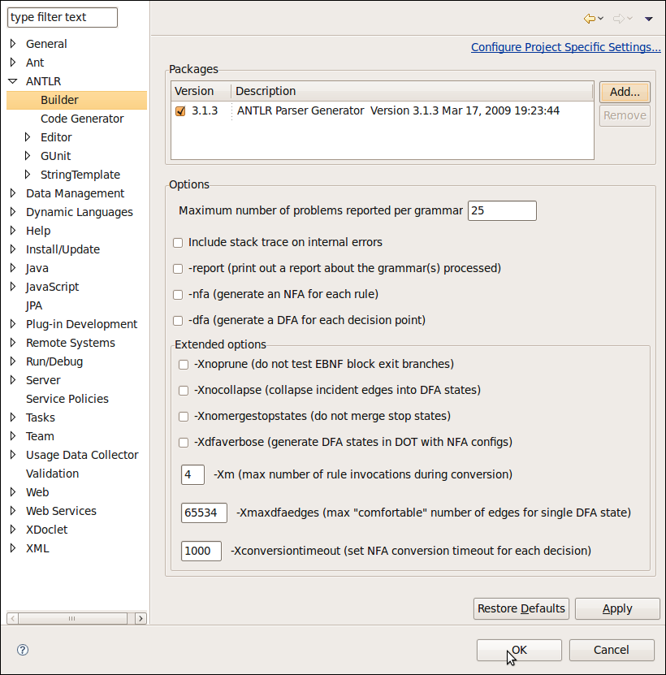

In this section, you will learn how to create an ANTLR package.
You can define as many different ANTLR packages as you like. ANTLR packages are used to build, run and debug grammars. Your ANTLR packages are managed on the Window>Preferences>ANTLR>Builder preference page
An ANTLR package consist of:
You can switch the default ANTLR package for the workbench. The default ANTLR package is used by default when building, running, and debugging grammars. Alternatively, projects may specify a specific an ANTLR package that they should be built and run with.
Note: The Add External JARS... button is used for add Custom Targets
